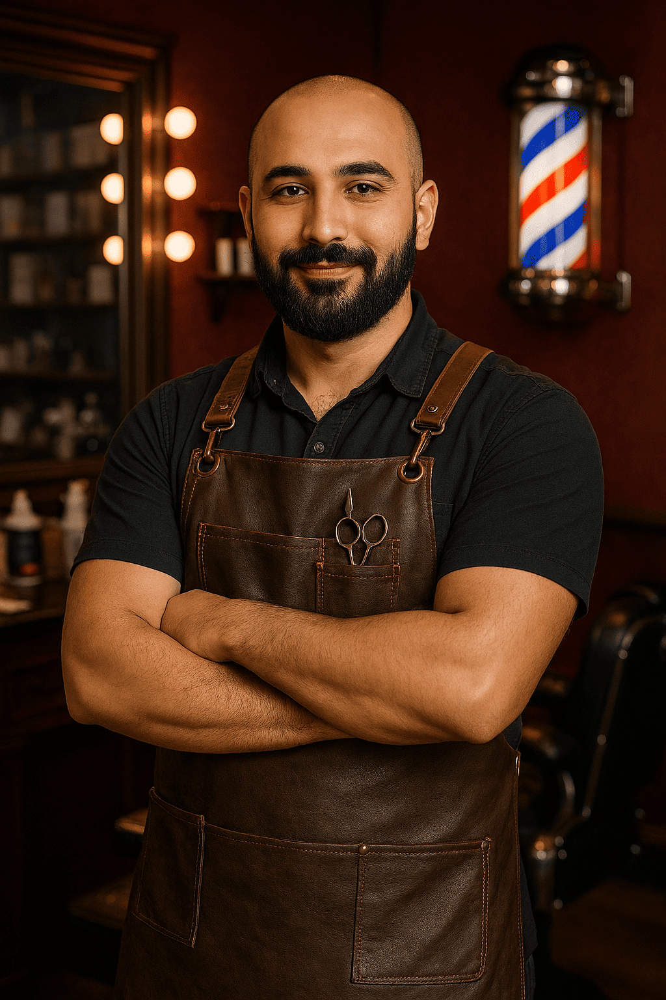

Proper Barber aloitti toimintansa vuonna 2020, kun kaveriporukka huomasi ongelman, joka oli nousussa
parturialalla. Monissa liikkeissä keskityttiin vain trendikkäisiin malleihin, kuten fadeihin, croppeihin
ja muihin somehitteihin, mutta perinteinen, yksilöllinen parturityö jäi taka-alalle.
ME PÄÄTIMME TEHDÄ TOISIN
Kokosimme yhteen vuosien kokemuksen, klassiset tekniikat ja modernin viimeistelyn. Näin syntyi Proper
Barber, paikka, jossa asiakas ei ole muotti, vaan yksilö. Meille tärkeintä ei ole mikä on trendissä,
vaan mikä sopii sinulle, siksi jokainen käynti alkaa sinua kuuntelemalla.
"Make every guest feel like they're the only guest." -Paul Mitchell
Timur
Timur on alalla pitkään toiminut parturi. Häneltä löytyy työvuosia 10 vuotta,
joten hänen taidot eivät varmasti jätä ketään kylmäksi. Timur on erikoistunut old fashion
-tyyleihin. Timur työskentelee Punavuoren toimipisteellä.

Yahir
Yahir on aloittanut parturoinnin jo lapsena. Hänen taitoja on palkittu
maailmanluokan parturointikisoissa. Yahir on erikoistunut pitkiin hiuksiin. Yahir
työskentelee Jätkäsaaren toimipisteessä
Franz
Franz aloitti Proper Barberissa harjoittelijana tänä keväänä. Franzin
erikoisalaa ovat nuorten trendikkäät leikkaukset kuten fadet ja mulletit. Franz työskentelee
Myyrmäen toimipisteellä.
Johan
Johan on vaikuttanut tällä alalla jo 15 vuotta. Johan opiskeli parturiksi
Ranskassa. Johanin erikoisalaa ovat parran muotoilu sekä klassiset hiustyylit. Johan
kiertää toimipisteitä ruuhkien mukaan.